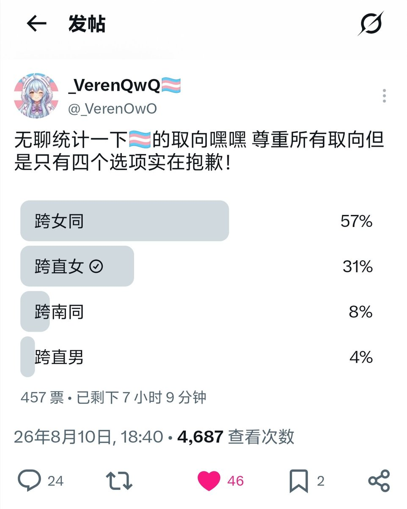

抽样数据不能代表整体……你觉得这点投票数据可以代表国内七百万跨儿吗？再然后就是性取向和性别认同其实并非一体，两边是独立关系，没有互相绑定的情况，而且谁告诉你同是「稀有词条」了，人群占比率可以达到5.8%呢，稀有在哪？


这是真的，跨性别和同性恋本身就两个都属于少数群体，你的意思是说你能刷出来两个稀有度极高的词条？玩游戏都不一定能十连双金，难道还能你说什么就是什么吗，有些人还觉得自己能在LGBT中同时占俩，这难道不是自欺欺人的搞笑吗？这个简直就像是你说你是素食主义者但是又有异食癖所以吃肉一样，虽然我知 https://t.co/Q0BxYsk4Bk https://t.co/L1iGKN0Aje